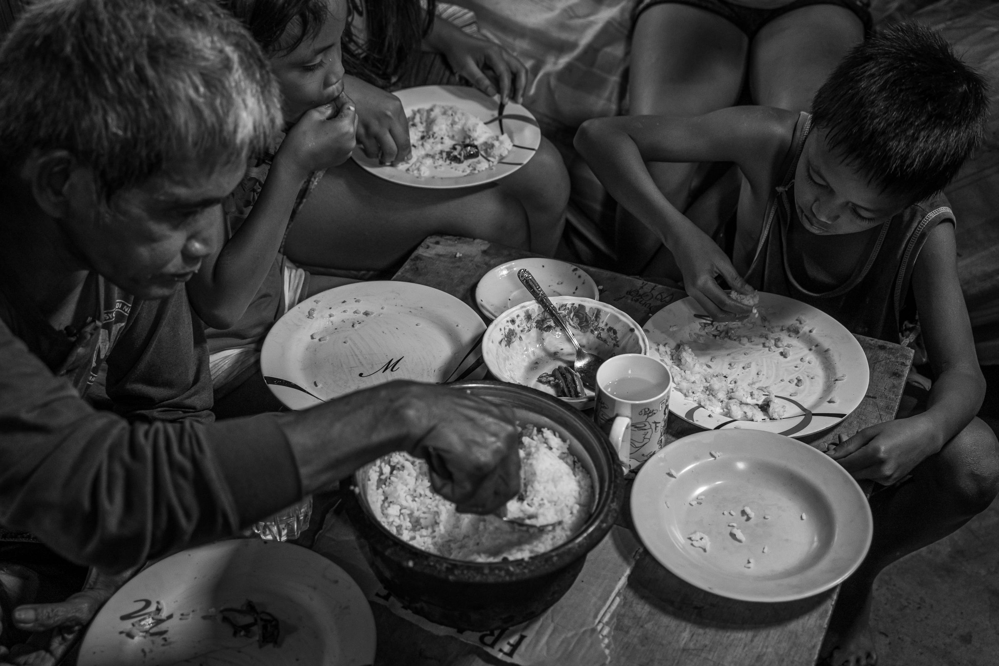

ACTION
The Philippines has a relatively high poverty rate, with more than 16% of the population living in poverty. Because to the large number of individuals who rely on agriculture for a living and the discrepancy in wealth distribution, around 17.6 million Filipinos are unable to buy basic essentials. Poverty fell from 21.6 percent to 16.6 percent between 2015 and 2020. President Rodrigo Duterte of the Philippines wants to eliminate poverty to 14 percent by 2022. The Philippine government intends to abolish severe poverty by 2040 through its AmBisyon 2040 policy. Furthermore, the government has adopted a number of programs and reforms aimed at reducing poverty, with a focus on education, healthcare, and the broader economy. Here are five ways that the program is addressing poverty in the Philippines.
Combating Poverty

Greater Access to Education: A factor of systemic poverty is a lack of access to education in impoverished areas. People gain basic skills and increased job opportunities through education, which can help to combat poverty in the Philippines. Therefore, the Philippines signed the Universal Access to Quality Tertiary Education Act in 2017 to encourage more people to enroll in higher education and to address the issue of education inequality. The government subsidizes the cost of tuition for State Universities and Colleges (SUCs) students as well as other expenses such as school supplies. Private institutions also have access to a tuition subsidy. The Act aims to decrease the number of dropouts in higher education and promote the idea that higher education is available to all.
Greater Access to Healthcare: In an effort to improve the healthcare system, President Duterte signed the Universal Healthcare Act in February 2019. The UHC Act provides access to the full spectrum of healthcare by enrolling citizens in the National Insurance Program and granting health coverage to all. While healthcare is not completely free, those in poverty will have more access to health services. To ensure the effectiveness of healthcare, the Act will form the Health Technology and Assessment Council (HTAC). The Council will consist of health experts who will assess health developments, such as technology, vaccines and other advancements. Additionally, the Philippines will allocate more funds to PhilHealth, which will improve the quality of service and lower the cost of medicine.
Family Aid: To further efforts to support citizens, the government implemented the Pantawid Pamilyang Pilipino Program (4Ps) in 2007. The 4Ps is is a conditional cash transfer program for impoverished households. The program gives households grants so long as they meet certain requirements, including keeping the children in school, having regular health check-ups and having parents or guardians attend Family Development Sessions. The 4Ps program benefits about 20 million Filipinos, 9 million of whom are children. Therefore, the program reaches about 20% of the population with the goal of greater poverty reduction.
Economic Improvement: With the goal of reducing poverty by strengthening economics, President Duterte signed the Rice Tariffication Law in February 2019, amending the Agricultural Tariffication Act of 1996. The Law places a 35% tariff on imported rice with the goal of prioritizing local rice production for the population by stabilizing the supply. The tariff also aims to benefit local farmers by creating a more efficient and competitive agricultural system.
Build, Build, Build: Additionally, the Duterte administration created the “Build, Build, Build” infrastructure plan in 2017. The initial goal of the program was to complete 75 projects, but Duterte revised the plan to instead target finishing 100 projects. Some projects include new public transportation and airport renovations. The government has put about 34% of the projects into action and is expecting to complete 56% by 2022. By 2019, the government had completed two of the initial 75 projects. With support from loans, the Philippines will rely on Build, Build, Build as a strategy to aid the country in recovering from the COVID-19 pandemic. The government’s hope is that combatting the effects of the pandemic by improving the country’s infrastructure will stimulate the economy and create more jobs. However, the program has received criticism due to its slow execution as a result of underspending.